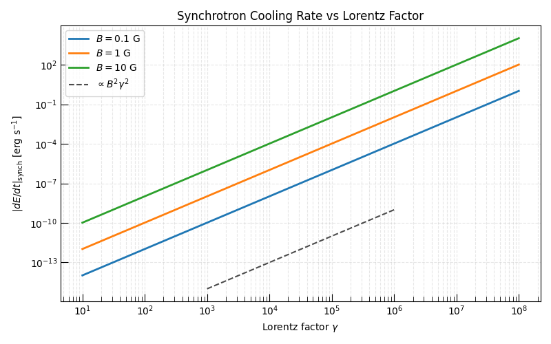
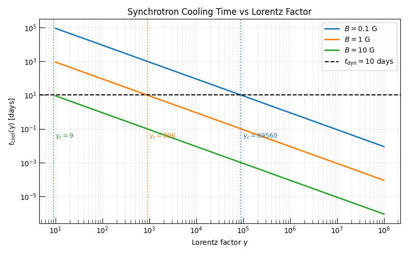
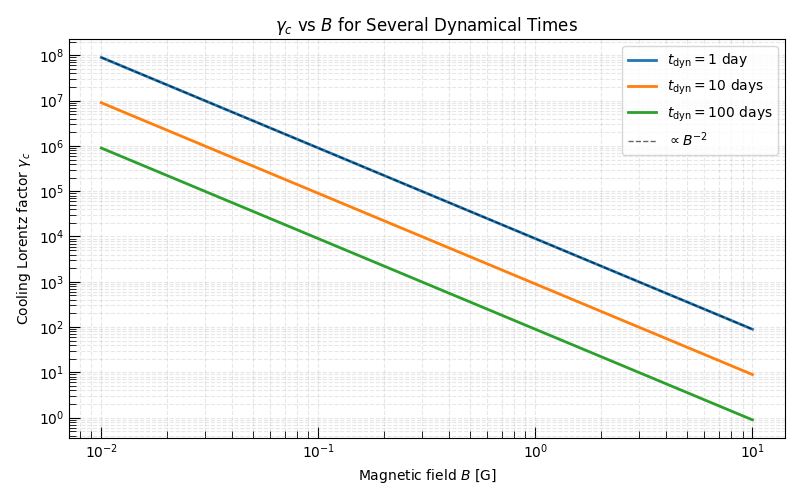
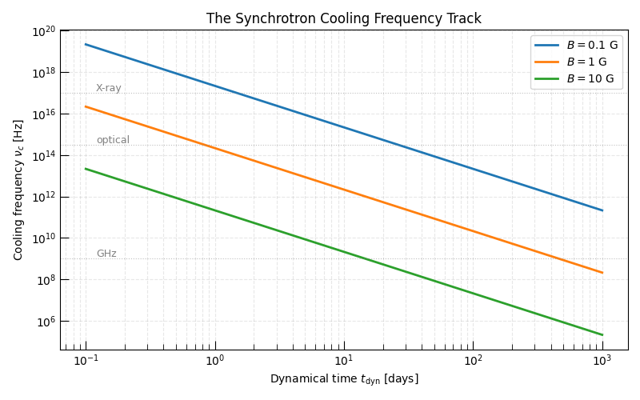

Note
Go to the end to download the full example code.
Electron Cooling — the Synchrotron Radiative Cooling Engine#
When relativistic electrons gyrate in a magnetic field they lose energy through synchrotron radiation at the rate
where \(\sigma_T\) is the Thomson cross-section and \(\langle\sin^2\alpha\rangle = 2/3\) for an isotropic pitch-angle distribution. The cooling time is defined as the time for an electron to lose all of its energy:
The cooling Lorentz factor \(\gamma_c\) is the Lorentz factor for which \(t_{\rm cool}(\gamma_c) = t_{\rm dyn}\), i.e. the minimum energy at which electrons cool significantly within the dynamical time:
Electrons with \(\gamma > \gamma_c\) are in the fast-cooling regime; those with \(\gamma < \gamma_c\) are in the slow-cooling regime.
This example demonstrates the
SynchrotronRadiativeCoolingEngine
class which encapsulates all of these calculations.
Note
SynchrotronRadiativeCoolingEngine
must be imported directly from
radiation.synchrotron.cooling. The top-level
radiation.synchrotron namespace only exports the abstract
base class SynchrotronCoolingEngine.
Relevant API References#
import matplotlib.pyplot as plt
import numpy as np
from astropy import units as u
from triceratops.radiation.synchrotron.cooling import SynchrotronRadiativeCoolingEngine
from triceratops.utils.plot_utils import set_plot_style
Engine Instantiation#
The SynchrotronRadiativeCoolingEngine
is a stateless engine: physical parameters are passed at call time, not stored
at construction. The only configuration choice at instantiation is whether to
use the pitch-angle averaged loss rate (default, pitch_averaged=True).
engine = SynchrotronRadiativeCoolingEngine(pitch_averaged=True)
# Lorentz factor grid
gamma_arr = np.geomspace(10, 1e8, 500)
# Magnetic fields and dynamical times to explore
B_values = [0.1 * u.G, 1.0 * u.G, 10.0 * u.G]
B_labels = [r"$B = 0.1$ G", r"$B = 1$ G", r"$B = 10$ G"]
colors = ["C0", "C1", "C2"]
Section 1: Cooling Rate dE/dt vs γ#
The synchrotron cooling rate grows as \(|\dot E| \propto B^2 \gamma^2\). In log–log space this is a slope-2 line whose intercept increases by \(\log(B^2)\) with each decade of \(B\).
set_plot_style()
fig, ax = plt.subplots(figsize=(8, 5))
for B, label, color in zip(B_values, B_labels, colors):
rates = np.array([engine.compute_cooling_rate(B=B, gamma=g).to_value(u.erg / u.s) for g in gamma_arr])
ax.loglog(gamma_arr, rates, lw=2, color=color, label=label)
# Guide line: ∝ γ²
g_ref = np.array([1e3, 1e6])
ax.loglog(g_ref, 1e-15 * (g_ref / 1e3) ** 2, "k--", lw=1.5, alpha=0.7, label=r"$\propto B^2 \gamma^2$")
ax.set_xlabel(r"Lorentz factor $\gamma$")
ax.set_ylabel(r"$|dE/dt|_{\rm synch}$ [erg s$^{-1}$]")
ax.set_title("Synchrotron Cooling Rate vs Lorentz Factor")
ax.legend()
ax.grid(True, which="both", ls="--", alpha=0.3)
plt.tight_layout()
plt.show()

Section 2: Cooling Time vs γ and the Cooling Lorentz Factor#
compute_cooling_time()
returns \(t_{\rm cool}(\gamma, B)\). We overlay a representative
dynamical time \(t_{\rm dyn}\) and identify the crossing point
\(\gamma_c\) where \(t_{\rm cool} = t_{\rm dyn}\).
Note
The cooling time scales as \(t_{\rm cool} \propto B^{-2}\gamma^{-1}\). Stronger magnetic fields cool electrons faster, shifting \(\gamma_c\) to lower Lorentz factors.
t_dyn = 10.0 * u.day
fig, ax = plt.subplots(figsize=(8, 5))
for B, label, color in zip(B_values, B_labels, colors):
t_cool = np.array([engine.compute_cooling_time(B=B, gamma=g).to_value(u.day) for g in gamma_arr])
ax.loglog(gamma_arr, t_cool, lw=2, color=color, label=label)
# Cooling Lorentz factor
gamma_c = engine.compute_cooling_gamma(B=B, t=t_dyn)
ax.axvline(gamma_c, color=color, ls=":", lw=1.5, alpha=0.7)
ax.text(gamma_c * 1.1, 3e-2, rf"$\gamma_c = {gamma_c:.0f}$", color=color, fontsize=9)
ax.axhline(t_dyn.value, color="k", ls="--", lw=1.5, label=rf"$t_{{\rm dyn}} = {t_dyn.value:.0f}$ days")
ax.set_xlabel(r"Lorentz factor $\gamma$")
ax.set_ylabel(r"$t_{\rm cool}(\gamma)$ [days]")
ax.set_title("Synchrotron Cooling Time vs Lorentz Factor")
ax.legend()
ax.grid(True, which="both", ls="--", alpha=0.3)
plt.tight_layout()
plt.show()

Section 3: γ_c vs B for Several Dynamical Times#
As the source evolves (increasing \(t_{\rm dyn}\)) fewer electrons are above the cooling threshold, shifting \(\gamma_c\) to lower values. Simultaneously, if \(B\) declines with time (as in blast-wave models), \(\gamma_c\) moves in the opposite direction. The interplay of these two effects determines whether the source transitions from fast-cooling to slow-cooling.
B_arr = np.geomspace(0.01, 10.0, 200) * u.G
t_dyn_values = [1.0 * u.day, 10.0 * u.day, 100.0 * u.day]
t_labels = [r"$t_{\rm dyn} = 1$ day", r"$t_{\rm dyn} = 10$ days", r"$t_{\rm dyn} = 100$ days"]
fig, ax = plt.subplots(figsize=(8, 5))
for t_dyn, tlabel, color in zip(t_dyn_values, t_labels, colors):
gamma_c_arr = np.array([engine.compute_cooling_gamma(B=B, t=t_dyn) for B in B_arr])
ax.loglog(B_arr.to_value(u.G), gamma_c_arr, lw=2, color=color, label=tlabel)
# Guide: γ_c ∝ B^{-2}
B_ref = 0.1
g_c_ref_1day = engine.compute_cooling_gamma(B=0.1 * u.G, t=1.0 * u.day)
B_guide = np.array([0.01, 10.0])
ax.loglog(B_guide, g_c_ref_1day * (B_guide / B_ref) ** (-2), "k--", lw=1, alpha=0.6, label=r"$\propto B^{-2}$")
ax.set_xlabel(r"Magnetic field $B$ [G]")
ax.set_ylabel(r"Cooling Lorentz factor $\gamma_c$")
ax.set_title(r"$\gamma_c$ vs $B$ for Several Dynamical Times")
ax.legend()
ax.grid(True, which="both", ls="--", alpha=0.3)
plt.tight_layout()
plt.show()

Section 4: The Cooling Frequency Track ν_c(t_dyn)#
The synchrotron frequency of the cooling electron, \(\nu_c = \nu_{\rm synch}(\gamma_c, B)\), traces a characteristic cooling track as a function of \(t_{\rm dyn}\).
compute_characteristic_frequency()
combines \(\gamma_c(B, t)\) and \(\nu(\gamma, B)\) into a
single convenience method.
t_dyn_arr = np.geomspace(0.1, 1000.0, 200) * u.day
fig, ax = plt.subplots(figsize=(8, 5))
for B, label, color in zip(B_values, B_labels, colors):
nu_c_track = np.array(
[
engine.compute_characteristic_frequency(B=B, gamma=engine.compute_cooling_gamma(B=B, t=t)).to_value(u.Hz)
for t in t_dyn_arr
]
)
ax.loglog(t_dyn_arr.to_value(u.day), nu_c_track, lw=2, color=color, label=label)
# Mark radio/optical/X-ray bands
for nu_band, bname in [(1e9, "GHz"), (3e14, "optical"), (1e17, "X-ray")]:
ax.axhline(nu_band, color="gray", ls=":", lw=0.8, alpha=0.5)
ax.text(0.12, nu_band * 1.2, bname, color="gray", fontsize=9)
ax.set_xlabel(r"Dynamical time $t_{\rm dyn}$ [days]")
ax.set_ylabel(r"Cooling frequency $\nu_c$ [Hz]")
ax.set_title("The Synchrotron Cooling Frequency Track")
ax.legend()
ax.grid(True, which="both", ls="--", alpha=0.3)
plt.tight_layout()
plt.show()

Discussion#
The synchrotron cooling engine provides a self-consistent calculation of all quantities related to radiative energy losses. Key takeaways:
The cooling rate \(|\dot E| \propto B^2 \gamma^2\) means that both stronger fields and higher-energy electrons cool faster.
\(\gamma_c \propto B^{-2} t_{\rm dyn}^{-1}\) decreases with both field strength and source age — sources transition from fast to slow cooling as they evolve.
The cooling frequency \(\nu_c \propto B^{-3} t_{\rm dyn}^{-2}\) falls rapidly with time, eventually leaving the observing band.
These results feed directly into the forward-closure example, where \(\gamma_c\) is used as an input to compute the cooling break frequency \(\nu_c\) for a given \((B, t_{\rm dyn})\).
For the role of inverse Compton cooling (which modifies \(\gamma_c\) when an external radiation field is present) see the companion example on synchrotron vs IC cooling.
Total running time of the script: (0 minutes 1.369 seconds)